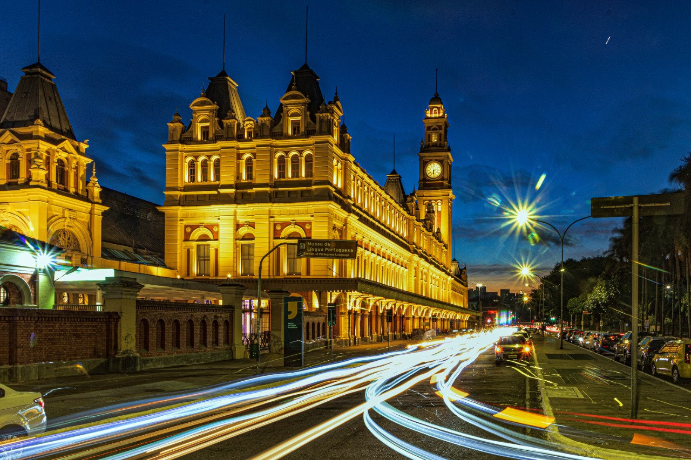

| O Museu Laços de Família Jogos Interativos Português no Mundo | |
|  | |
O novo Museu da Língua Portuguesa está de volta!Valorizar a diversidade da língua portuguesa, celebrá-la como elemento fundamental e fundador da cultura e aproximá-la dos falantes do idioma em todo o mundo. Foi com esses objetivos que nasceu o Museu da Língua Portuguesa; os mesmos objetivos com os quais ele renasce, em 2021, após sua reconstrução no edifício da Estação da Luz. O museu abriu ao público pela primeira vez em 2006, tendo escolhido como casa a cidade de São Paulo, que abriga a maior população de falantes da língua portuguesa em todo o mundo. A Estação da Luz foi um dos principais pontos de passagem dos imigrantes que chegavam ao país e, até hoje, é um espaço dinâmico de contato e convivência entre várias culturas e classes sociais, abrigando sotaques vindos de todas as partes do Brasil. Em seus primeiros 10 anos de funcionamento, o Museu da Língua Portuguesa recebeu 3.931.040 visitantes, que puderam se conectar de forma lúdica e emocionante às suas origens do idioma, sua história, suas influências e as formas que ele assume no cotidiano da população. |
|